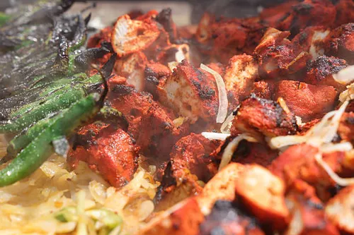

Chicken Tikka

Chicken tikka is a North Indian appetizer of boneless chicken chunks marinated in spiced yogurt, then skewered and grilled (traditionally in a tandoor) until charred. It's smoky, tangy, and tender — essentially a boneless version of tandoori chicken.
Ingredients:
Steps:
- Marinate – Combine boneless chicken chunks (500 g) with ½ cup yogurt, 1 tsp each ginger & garlic paste, 1 tsp lemon juice, 1 tsp red chilli powder, ½ tsp each turmeric, cumin & coriander powder, ½ tsp garam masala, salt, and 1 tsp oil. Mix well and refrigerate for at least 2 hours (overnight is best).
- Skewer – Thread the marinated chicken pieces onto metal skewers (or leave loose on a tray if not skewering).
- Preheat – Set your oven to grill/broil mode at 240 °C, or preheat a tawa/grill pan on high heat.
- Serve – Plate with a squeeze of lemon, fresh coriander, and a side of mint chutney or raita.
Home